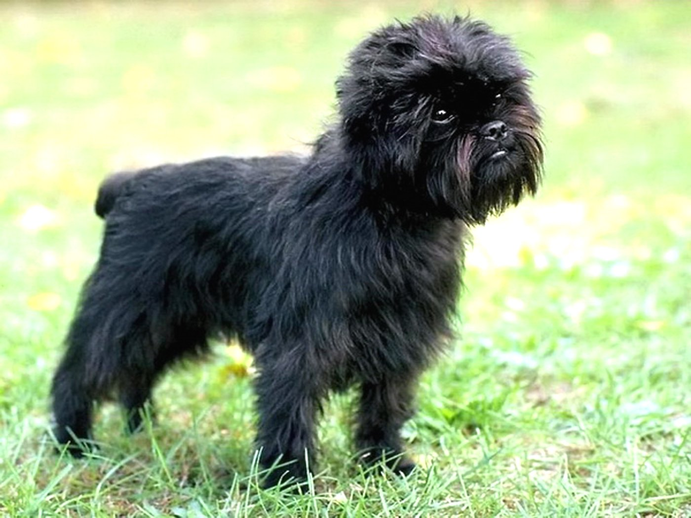
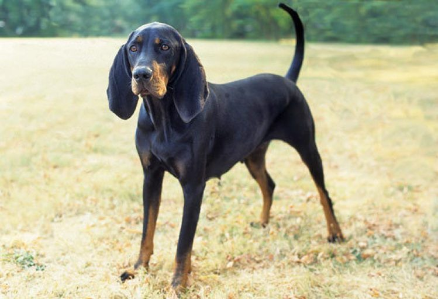

African Hunting Dog
Airedale

Appenzeller

Barabancon Griffon

Basenji

Basset Hound

Beagle

Bluetick Coonhound
Borzoi
Bouvier Des Flandres

Boxer
Briard

Boston Bulldog
French Bulldog

Cairn Terrier
Cardigan Welsh Corgi
Chihuahua
Chow Chow

Clumber Spaniel
Collie

Border Collie
Dandie Dinmont Terrier

Dhole

Dingo

Doberman Pinscher

EntleBucher Mountain Dog

Eskimo Dog

Great Dane

Great Pyrenees
Belgian Sheepdog
Ibizan Hound

Norwegian ElkHound

Scottish DearHound
Afghan Hound

Black-and-Tan CoonHound
BloodHound
English FoxHound
Irish WolfHound

Italian GreyHound
Walker Hound

Keeshond

Australian Kelpie

Komondor
Kuvasz
Leonberg
Lhasa Apso
Alaskan Malamute

Belgian Malinois

Maltese

Bullmastiff
Tibetan Mastiff

Mexican Hairless

Papillon
Miniature Pinscher
Bernese Mountain Dog

Greater Swiss Mountain Dog
Newfoundland
Pekinese

Pembroke
German Short-Haired Pointer
Pomeranian
Miniature Poodle
Standard Poodle
Pug
Redbone
Chesapeake Bay Retriever
Curly-Coated Retriever
Flat-Coated Retriever
Golden Retriever
Labrador Retriever
Rhodesian Ridgeback
Rottweiler
Saint Bernard
Saluki
Samoyed
Schipperke
Gaint Schnauzer
Miniature Schnauzer
Standard Schnauzer
English Setter
Gordon Setter
Irish Setter
Old English Sheepdog
Shetland Sheepdog
German Shepherd
Shih-Tzu
Siberian Husky
Brittany Spaniel
Blenheim Spaniel
Japanese Spaniel
Cocker Spaniel
Sussex Spaniel
Welsh Springer Spaniel
Irish Water Spaniel
English Spaniel
English Springer
American Stanffordshire Terrier
Australian Terrier
Bedlington Terrier
Border Terrier
Irish Terrier
Kerry Blue Terrier
Lakeland Terrier
Norfolk Terrier
Norwich Terrier
Scotch Terrier
Sealyham Terrier
Silky Terrier
Soft-Coated Wheaten Terrier
Tibetan Terrier
Toy Terrier
West Highland White Terrier
Wire-Haired Fox Terrier
Yorkshire Terrier
Vizsla
Weimaraner